Models and
thinking effort
Every AI tool now gives you two controls. One sets how capable the answer can be. The other sets how long the AI reasons before it replies. Knowing which one to move, and in which order, is the whole skill.
The same setting can be exactly right on one job and pure waste on the next. Tap each job to see what it cost.
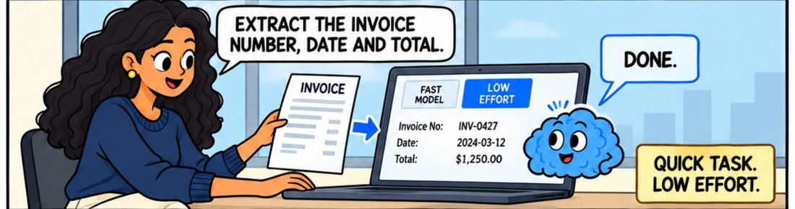
A quick job on the low setting
Time. A long reasoning pass can add seconds or minutes before a single word appears. On a job you were going to check in ten seconds, that is the whole saving gone.
Money. You pay by the amount of text going in and coming out, and the reasoning counts as text coming out even when you never see it. Higher effort means more of it.
Your limits. On a paid plan the reasoning eats into the same allowance as everything else. People who leave the setting on maximum tend to run out of usage by the afternoon.
No gain at all on some jobs. When the answer is already sitting in the document, there is nothing for the extra reasoning to work on. You pay for it and get the same words back.
A thinking model does some working out before it starts writing the reply. You usually do not see that part, but it is real work and you pay for it in time and in cost.
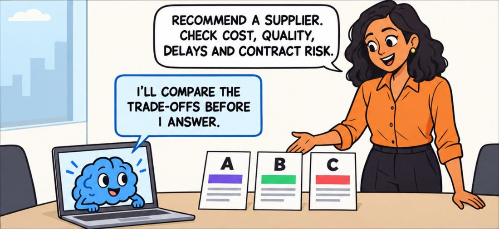
It works through the question first. Given a supplier decision, it lines up the trade-offs before it writes anything you can read.
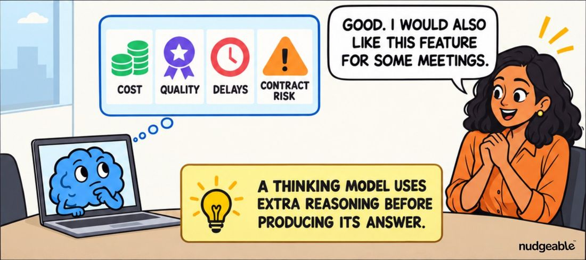
The working out is the product. Cost, quality, delays and risk get weighed one against the other. That comparison is what the extra time actually buys you.
Higher effort does not make the AI more careful with your instructions, more honest, or less likely to invent something. It makes it reason for longer before it answers. If the output keeps ignoring a rule you gave it, fix the brief rather than the dial.
Most tools hide the working out, or show you a short summary of it. A few let you read the whole thing. Either way it is produced, and it counts.
AI pricing is measured in tokens, which is simply the tool's way of counting chunks of text going in and coming out. A word is roughly one token. The reasoning is counted as text coming out, so a long think on a short question can cost more than the answer itself.
This is the part people find unfair the first time. You are charged for words you never asked for and never read. It is also exactly why the setting matters.
Official pages: Claude effort, OpenAI reasoning effort, Gemini thinking level, Copilot modes.
The model you choose sets how good the answer can possibly be. The effort you choose sets how much reasoning that model does on the way there. They are separate controls and they fail in different ways.
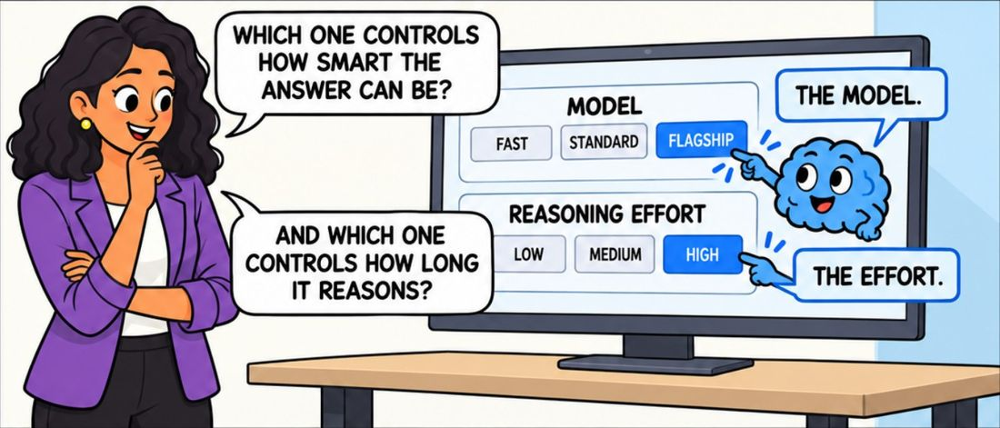
Two separate controls. The model picker sets the ceiling. The effort setting decides how long it reasons underneath that ceiling.
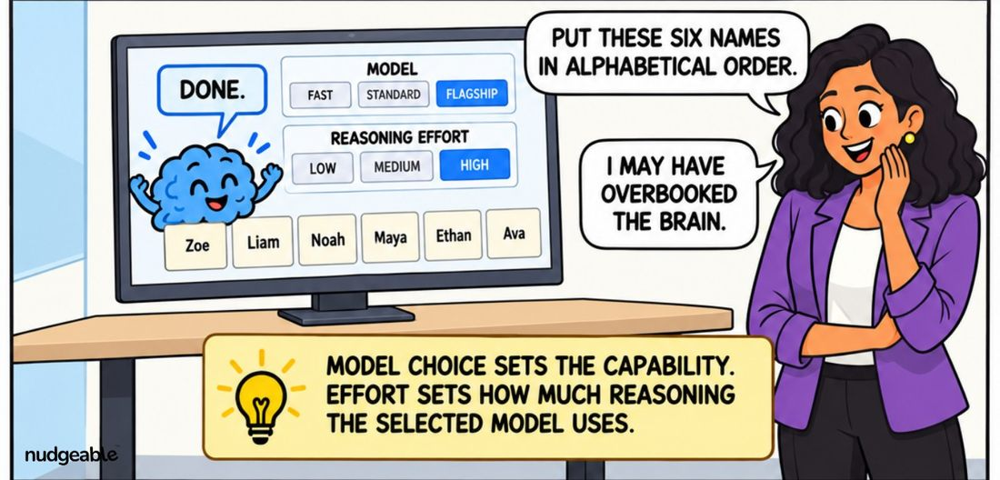
Both turned up on a job that needed neither. Putting six names in alphabetical order does not improve with a bigger model or a longer think. It only gets slower and dearer.
Four things change the quality of an answer. Only two of them are dials. Tap any card for the detail.
The model
Sets the ceiling. Every model has a limit on how hard a problem it can handle, and no setting inside that model moves the limit.
The effort
Sets how long the chosen model reasons before it replies. This is the dial to try first.
Your brief
Not a dial at all, and the most common real reason an answer disappoints.
What you gave it
The material sitting in front of it when it answers.
A disappointing answer has two very different causes, and they need opposite fixes. Tap through both.
More reasoning cannot make a model smarter
If the model cannot handle the problem, a longer think gives you a longer answer that is wrong in exactly the same way.
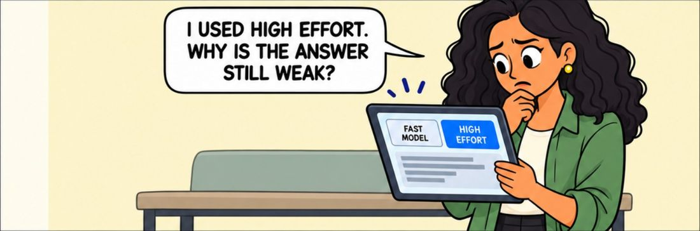
The dial moved and the quality did not. High effort on a fast model. You did everything the setting allows and the answer is still thin.
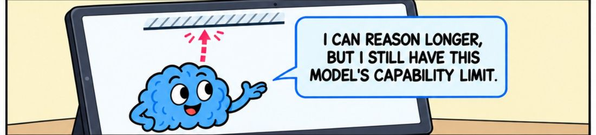
There is a limit you cannot see. It will reason for as long as you let it, but only up to what that model is capable of understanding.
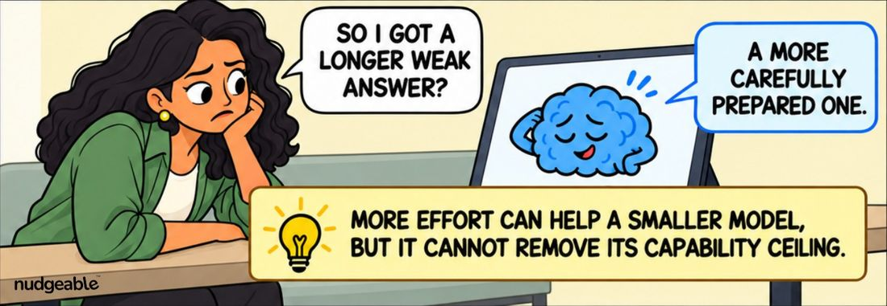
You get a longer weak answer, not a better one. More carefully prepared, still short of what the job needed.
It is the effort when the answer is thin, stops too early, skips an obvious trade-off, or gives you the conclusion without the reasoning. It understood the problem and did not work at it. Raise the effort.
It is the model when the answer is complete, confident and simply wrong about how the problem works. It misread what the question was really asking. More time will not help, because it will spend that time going further in the wrong direction. Move up a level.
When you cannot tell, raise the effort first. It takes one click and tells you the answer either way.
A better model often needs less reasoning
The stronger model starts from better instincts, so it reaches the same quality bar without the long warm up. This is the part that surprises people about the cost.
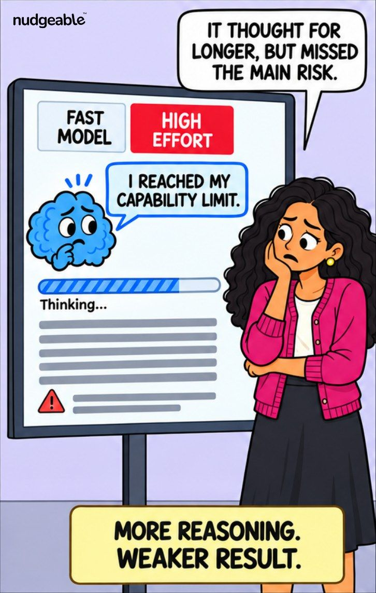
More reasoning, weaker result. The fast model thought for longer and still missed the main risk.
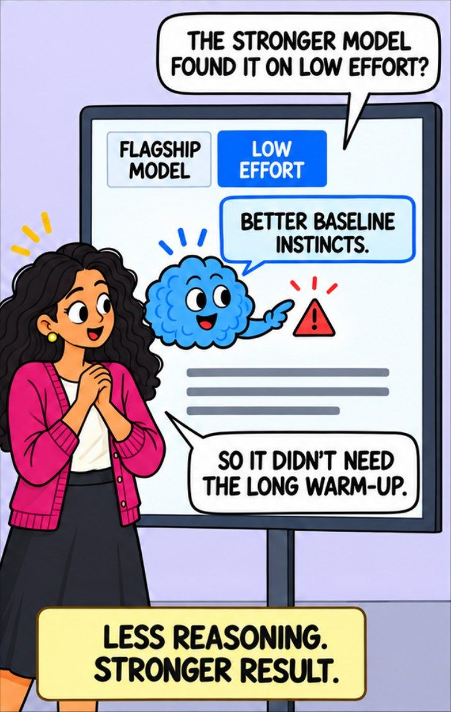
Less reasoning, stronger result. The flagship model found the same risk on the low setting, because it did not need the warm up.
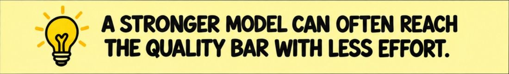
Your bill is the price per word multiplied by how many words get produced. A stronger model charges more per word. A weaker model on maximum produces far more words, because all that reasoning counts.
So a flagship model answering cleanly on the low setting can come out cheaper than a fast model grinding away on maximum, and it gives you the better answer as well.
The only way to know for your own work is to run the same real job on both settings once and compare what you were charged. It takes ten minutes and most people are surprised.
When an answer is not good enough there is an order to this. Start at the bottom and stop as soon as it works.
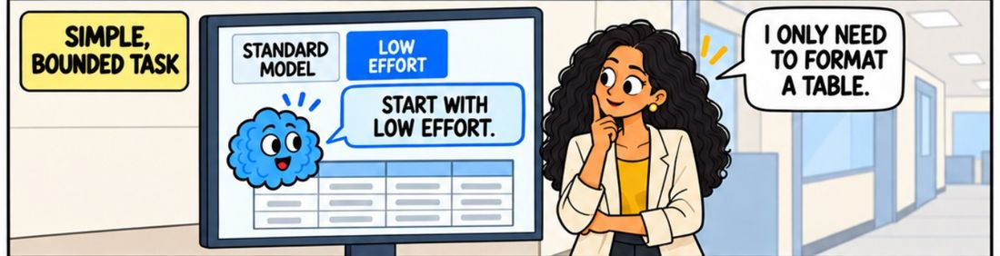
1. Start low on anything bounded. Formatting a table has one right answer. The standard model on low effort is the correct setting here, not a compromise you are settling for.
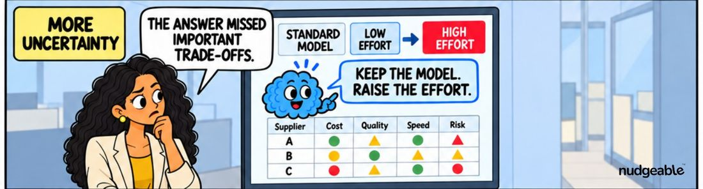
2. If it missed the trade-offs, raise the effort. Keep the same model. This is the cheap move and it fixes most disappointing answers on its own.
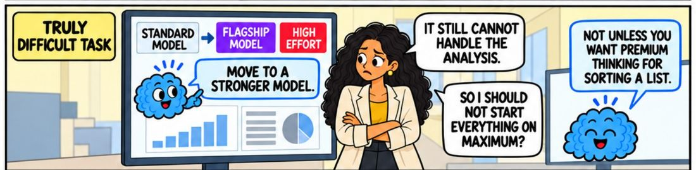
3. Only then move up a model. If it is still short at high effort, you have hit the ceiling. And starting everything on maximum is how you end up paying premium prices for sorting a list.
Raise the effort first, change the model second. Effort is one click and you can put it back. A model change raises the price of every word, going in and coming out, for as long as you leave it there.
Tap a card to turn it over.
"Maximum settings give the best answer, so I may as well leave it there."
Tap to flipOn a job with one right answer, maximum gives you that same answer more slowly and at a higher price. On a job with real trade-offs it earns its keep. The setting is only as good as its match to the task.
Tap to flip back"High effort makes the AI more accurate and less likely to make things up."
Tap to flipEffort buys reasoning time, not honesty. An AI reasoning hard from the wrong document still hands you a confident wrong answer. Check the material and the brief before you touch a dial.
Tap to flip back"A bigger model always costs more than a smaller one."
Tap to flipYour bill follows how much gets produced as well as the price per word. A strong model answering cleanly on low effort can cost less than a weak one reasoning at maximum, and it gives you the better answer too.
Tap to flip backAnswer three questions about one real job you have in front of you. You get a starting setting and the next move if it is not good enough.
What kind of job is it
Who sees it if it is wrong
How well do you know the answer already
This is a starting point, not a rule. Run the same job at two settings once and let the result decide.
Start here
Every major tool has the same pair of controls under different names. Each name links to the official page.
| Tool | Choosing the model | The effort control | Levels |
|---|---|---|---|
| Claude | A fast tier, a standard tier and a flagship tier, picked from a menu. | Effort, sitting on top of extended thinking | Low, medium, high, extra high and max. High is the usual starting point on the newer models. |
| ChatGPT | A model menu, plus instant, thinking and pro ways of answering. | Reasoning effort | Seven steps from none up to max, with medium as the common default. |
| Google Gemini | Flash for speed and volume, Pro for the harder work. | Thinking level | Low, medium and high. Low for looking things up, high for maths, coding and multi step planning. |
| Microsoft Copilot | Usually set by your organisation rather than by you. | Think Deeper, one of several modes | A mode you switch on rather than a dial. Quick response is the everyday one. |
Version numbers and level names move every few months, and the table above is correct as of September 2026. The structure has not moved at all: one control for how capable the answer can be, one for how long it reasons. Learn the pair and you can read any tool's settings screen in a minute.